CS229 Lecture
notes
翻译：CycleUser
监督学习（Supervised
learning）
咱们先来聊几个使用监督学习来解决问题的实例。假如咱们有一个数据集，里面的数据是俄勒冈州波特兰市的 47 套房屋的面积和价格：

这些数据来投个图吧：

这里要先规范一下符号和含义，这些符号以后还要用到，咱们假设 x(i)表示 “输入的”
变量值（在这个例子中就是房屋面积），也可以叫做输入特征；然后咱们用 y(i) 来表示“输出值”，或者称之为目标变量，这个例子里面就是房屋价格。这样的一对 (x(i),y(i)) 就称为一组训练样本，然后咱们用来让机器来学习的数据集，就是一个长度为 m 的训练样本的列表-{(x(i),y(i)); i = 1,...,m}-也叫做一个训练集。另外一定注意，这里的上标 “(i)” 只是作为训练集的索引记号，和数学乘方没有任何关系，千万别误解了。另外我们还会用大写的 X 来表示
输入值的空间，大写的 Y 表示输出值的空间。在本节的这个例子中，输入输出的空间都是实数域，所以 X = Y = R。
然后再用更加规范的方式来描述一下监督学习问题，我们的目标是，给定一个训练集，来让机器学习一个函数 h: X → Y，让
h(x) 能是一个与对应的真实
y 值比较接近的评估值。由于一些历史上的原因，这个函数 h 就被叫做假设（英文hypothesis）。用一个图来表示的话，这个过程大概就是下面这样：

如果我们要预测的目标变量是连续的，比如在咱们这个房屋价格-面积的案例中，这种学习问题就被称为回归问题。如果 y 只能取一小部分的离散的值（比如给定房屋面积，咱们要来确定这个房子是一个住宅还是公寓），这样的问题就叫做分类问题。
Part I
线性回归
为了让我们的房屋案例更有意思，咱们稍微对数据集进行一下补充，增加上每一个房屋的卧室数目

现在，输入特征 x 就是在
R2 范围取值的一个二维向量了。例如 x1(i) 就是训练集中第 i 个房屋的面积，而x1(i) 就是训练集中第 i 个房屋的卧室数目。（通常来说，设计一个学习算法的时候，选择那些输入特征都取决于你，所以如果你不在波特兰收集房屋信息数据，你也完全可以选择包含其他的特征，例如房屋是否有壁炉，卫生间的数量啊等等。关于特征筛选的内容会在后面的章节进行更详细的介绍，不过目前来说就暂时先用给定的这两个特征了。）
要进行这个监督学习，咱们必须得确定好如何在计算机里面对这个函数/假设
h 进行表示。咱们现在刚刚开始，就来个简单点的，咱们把 y 假设为一个以 x 为变量的线性函数：
hθ(x) = θ0 + θ1x1 + θ2x2
这里的θi是参数（也可以叫做权重），是从 X 到 Y的线性函数映射的空间参数。在不至于引起混淆的情况下，咱们可以把hθ(x) 里面的
θ 省略掉，就简写成 h(x)。另外为了简化公式，咱们还设
x0 = 1（这个也是截距项intercept term）。这样简化之后就有了：
h(x)=
等式的最右边的 θ 和 x 都是向量，等式中的 n 是输入变量的个数（不包括x0）。
现在，给定了一个训练集了，咱们怎么来挑选/学习参数θ呢？一个看上去比较合理的方法就是让 h(x) 尽量逼近 y，至少对咱已有的训练样本能适用。用公式的方式来表示的话，就要定义一个函数，来衡量对于每个不同的 θ
值，h(x(i)) 与对应的
y(i) 的距离。这样用如下的方式定义了一个 成本函数 （cost function）:
J()= 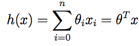
如果之前你接触过线性回归，你会发现这个函数和常规最小二乘法拟合模型中的最小二乘法成本函数非常相似。不管之前接触过没有，咱们都接着往下进行，以后就会发现这是一个更广泛的算法家族中的一个特例。
1 LMS algorithm
我们希望选择一个能让 J(θ)
最小的 θ
值。怎么做呢，咱们先用一个搜索的算法，从某一个对 θ
的“初始猜测值”，然后对 θ
值不断进行调整，来让 J(θ) 逐渐变小，最好是直到我们能够达到一个使 J(θ) 最小的 θ。具体来说，咱们可以考虑使用梯度下降法（gradient
descent algorithm），这个方法就是从某一个
θ 的初始值开始，然后逐渐重复更新：
注：本文中“:=
” 表示的是计算机程序中的一种赋值操作，是把等号右边的计算结果赋值给左边的变量，“a := b” 就表示用 b 的值覆盖 a 原有的
值。要注意区分，如果写的是“a = b” 则表示的是判断二者相等的关系。（译者注：在 Python 中，单个等号 = 就是赋值，两个等号 ==
表示相等关系的判断。）
（上面的这个更新要同时对应从 0 到 n 的所有j 值进行。）这里的 α 也称为学习速率。这个算法是很自然的，逐步重复朝向 J 降低最快的方向移动。
要实现这个算法，咱们需要解决等号右边的导数项。首先来解决只有一组训练样本
(x, y) 的情况，这样就可以忽略掉等号右边对 J 的求和项目了。公式就简化下面这样：
对单个训练样本，更新规则如下所示：
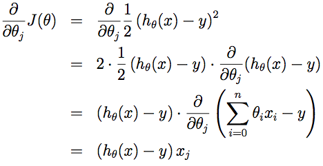
这个规则也叫 LMS 更新规则 (LMS 是 “least mean squares” 的缩写，意思是最小均方)，也被称为 Widrow-Hoff 学习规则。这个规则有几个看上去就很自然直观的特性。例如，更新的大小与(y(i) _ hθ(x(i)))成正比；另外，当我们遇到训练样本的预测值与 y(i) 的真实值非常接近的情况下，就会发现基本没必要再对参数进行修改了；与此相反的情况是，如果我们的预测值 hθ(x(i)) 与 y(i) 的真实值有很大的误差（比如距离特别远），那就需要对参数进行更大地调整。
当只有一个训练样本的时候，我们推导出了
LMS 规则。当一个训练集有超过一个训练样本的时候，有两种对这个规则的修改方法。第一种就是下面这个算法：
重复直到收敛{_
}
读者很容易能证明，在上面这个更新规则中求和项的值就是_J(θ)/_θj (这是因为对 J 的原始定义)。所以这个更新规则实际上就是对原始的成本函数 J 进行简单的梯度下降。这一方法在每一个步长内检查所有整个训练集中的所有样本，也叫做批量梯度下降法（batch gradient descent）。这里要注意，因为梯度下降法容易被局部最小值影响，而我们要解决的这个线性回归的优化问题只能有一个全局的而不是局部的最优解；因此，梯度下降法应该总是收敛到全局最小值（假设学习速率 α
不设置的过大）。J 是一个凸的二次函数。下面是一个样例，其中对一个二次函数使用了梯度下降法来找到最小值。
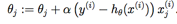
上图的椭圆就是一个二次函数的轮廓图。图中还有梯度下降法生成的规矩，初始点位置在(48,30)。图中的画的 x （用直线连接起来了）标记了梯度下降法所经过的 θ
的可用值。
对咱们之前的房屋数据集进行批量梯度下降来拟合 θ，把房屋价格当作房屋面积的函数来进行预测，我们得到的结果是obtain θ0 = 71.27, θ1 = 0.1345。如果把 hθ(x) 作为一个定义域在 x 上的函数来投影，同时也投上训练集中的已有数据点，会得到下面这幅图：

.
如果在数据集中添加上卧室数目作为输入特征，那么得到的结果就是 θ0 =
89.60, θ1 =
0.1392, θ2 =
_8.738。
这个结果就是用批量梯度下降法来获得的。此外还有另外一种方法能够替代批量梯度下降法，这种方法效果也不错。如下所示：
Loop {_
for i=1 to
m, {
}
}
在这个算法里，我们对整个训练集进行了循环遍历，每次遇到一个训练样本，根据每个单一训练样本的误差梯度来对参数进行更新。这个算法叫做随机梯度下降法（stochastic gradient descent），或者叫增量梯度下降法（incremental
gradient descent）。批量梯度下降法要在运行第一步之前先对整个训练集进行扫描遍历，当训练集的规模 m 变得很大的时候，因此引起的性能开销就很不划算了；随机梯度下降法就没有这个问题，而是可以立即开始，对查询到的每个样本都进行运算。通常情况下，随机梯度下降法查找到足够接近最低值的 θ
的速度要比批量梯度下降法更快一些。(也要注意，也有可能会一直无法收敛（converge）到最小值，这时候 θ
会一直在 J(θ) 最小值附近震荡；不过通常情况下在最小值附近的这些值大多数其实也足够逼近了，足以满足咱们的精度要求，所以也可以用。当然更常见的情况通常是我们事先对数据集已经有了描述，并且有了一个确定的学习速率α，然后来运行随机梯度下降，同时逐渐让学习速率α随着算法的运行而逐渐趋于0，这样也能保证我们最后得到的参数会收敛到最小值，而不是在最小值范围进行震荡。) 由于以上种种原因，通常更推荐使用的都是随机梯度下降法，而不是批量梯度下降法，尤其是在训练用的数据集规模大的时候。
2 法方程（The normal equations）
上文中的梯度下降法是一种找出 J 最小值的办法。然后咱们聊一聊另一种实现方法，这种方法寻找起来简单明了，而且不需要使用迭代算法。这种方法就是，我们直接利用找对应导数为 0 位置的
θj，这样就能找到 J 的最小值了。我们想实现这个目的，还不想写一大堆代数公式或者好几页的矩阵积分，所以就要介绍一些做矩阵积分的记号。
2.1 矩阵导数（Matrix derivatives）
假如有一个函数 f: Rm×n →
R 从 m * n 大小的矩阵映射到实数域，那么就可以定义当矩阵为 A 的时候有导函数 f 如下所示：

因此，这个梯度 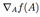 本身也是一个 m*n 的矩阵，其中的第 (i,j) 个元素是
_f/_Aij 。例如，假如 是一个 2*2 矩阵，然后给定的函数 f：R2×2 → R 为：
是一个 2*2 矩阵，然后给定的函数 f：R2×2 → R 为：
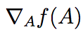
这里面的 Aij 表示的意思是矩阵 A 的第(i,j) 个元素。然后就有了梯度：
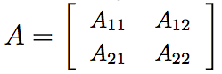
然后咱们还要引入 trace 求迹运算，简写为 tr。对于一个给定的
n*n 方形矩阵 A，它的迹定义为对角项和：
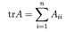
假如 a 是一个实数，实际上 a 就可以看做是一个 1*1 的矩阵，那么就有 a 的迹 tr a = a。(如果你之前没有见到过这个“运算记号”，就可以把 A 的迹看成是 tr(A)，或者理解成为一个对矩阵 A 进行操作的 trace 函数。不过通常情况都是写成不带括号的形式更多一些。)
如果有两个矩阵 A 和 B，能够满足 AB 为方阵，trace 求迹运算就有一个特殊的性质： trAB = trBA. (自己想办法证明！)在此基础上进行推论，就能得到类似下面这样的等式关系：
trABC = trCAB = trBCA,
trABCD = trDABC =
trCDAB = trBCDA.
下面这些和求迹运算相关的等量关系也很容易证明。其中
A 和 B 都是方形矩阵，a 是一个实数：
trA = trAT_
tr (A + B) = trA +
trB
tr aA = a trA
接下来咱们就来在不进行证明的情况下提出一些矩阵导数（其中的一些直到本节末尾才用得上）。另外要注意等式（4）A 必须是非奇异方形矩阵（non-singular square matrices），而 |A| 表示的是矩阵 A 的行列式。那么我们就有下面这些等量关系：
_AtrAB= BT (1)
_AT f (A)= (_Af(A))T (2)
_Atr ABAT C= CAB + CT ABT (3)
_A |A| = |A|(A_1)T (4)
为了让咱们的矩阵运算记号更加具体，咱们就详细解释一下这些等式中的第一个。加入我们有俩一个确定的矩阵 B ∈
Rn×m（注意顺序，是n*m，这里的意思也就是 B 的元素都是实数，B的形状是 n*m 的一个矩阵），那么接下来就可以定义一个函数 f: Rm×n →
R ，对应这里的就是 f(A) = trAB。这里要注意，这个矩阵是有意义的，因为如果 A ∈
Rm×n，那么 AB 就是一个方阵，是方阵就可以应用 trace 求迹运算；因此，实际上 f 映射的是从 Rm×n 到实数域 R。这样接下来就可以使用矩阵导数来找到 _Af(A) ，这个导函数本身也是一个 m*n 的矩阵。上面的等式(1) 表明了这个导数矩阵的第 (i, j)个元素等同于 BT （B的转置）的第 (i, j) 个元素，或者更直接表示成 Bji。
上面等式(1-3) 都很简单，证明就都留给读者做练习了。等式(4)需要用逆矩阵的伴随矩阵来推导出。
假如咱们定义一个矩阵 A′，它的第 (i, j) 个元素是
(_1)i+j 与矩阵 A 去除
第 i 行
和 第 j 列
之后的行列式的乘积，则可以证明有A_1 = (A′)T /|A|。（你可以检查一下，比如在 A 是一个 2*2 矩阵的情况下看看 A-1 是什么样的，然后以此类推。如果你想看看对于这一类结果的证明，可以参考一本中级或者高级的线性代数教材，比如Charles Curtis, 1991, Linear Algebra,
Springer。）这也就意味着 A′ = |A|(A_1)T 。此外，一个矩阵 A 的行列式也可以写成 |A| = AijA′ 。因为 (A′)ij 不依赖
Aij （通过定义也能看出来），这也就意味着(_/_Aij)|A| = A′ij ，综合起来也就得到上面的这个结果了。
2.2 最小二乘法回顾（Least squares revisited）
通过刚才的内容，咱们大概掌握了矩阵导数这一工具，接下来咱们就继续用逼近模型（closed-form）来找到能让 J(θ) 最小的
θ 值。首先咱们把 J 用矩阵-向量的记号来重新表述。
给定一个训练集，把设计矩阵（design
matrix） X 设置为一个 m*n 矩阵（实际上，如果考虑到截距项，也就是 θ0 那一项，就应该是 m*(n+1) 矩阵），这个矩阵里面包含了训练样本的输入值作为每一行：

然后，咱们设 _y 是一个 m 维向量（m-dimensional vector），其中包含了训练集中的所有目标值：

因为 hθ(x(i)) = (x(i))T θ（译者注：这个怎么推出来的我目前还没尝试，目测不难），所以可以证明存在下面这种等量关系：
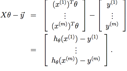
对于向量 z ，则有 zT z = z2 ，因此利用这个性质，可以推出:
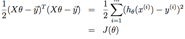
最后，要让 J 的值最小，就要找到导数为 0 的点。结合等式（2）和等式（3），就能得到下面这个等式（5）：
_AT trABATC=BTATCT +BATC (5)
因此就有：

在第三步，我们用到了一个定理，也就是一个实数的迹就是这个实数本身；第四步用到了
trA = trAT 这个定理；第五步用到了等式（5），其中
AT =θ, B=BT =XTX, C=I,，还用到了等式 (1)。要让 J 取得最小值，就摄制导数为 0 ，然后就得到了下面的法线方程（normal equations）：
X T X θ = X T _y_
所以让 J(θ) 取值最小的 θ 就是θ = (XT X)_1XT _y._
3 概率解释（Probabilistic interpretation）
在面对回归问题的时候，可能有这样一些疑问，就是为什么选择线性回归，尤其是为什么而是最小二乘法成本函数 J？在本节里，我们会给出一系列的概率基本假设，基于这些假设，就可以推出最小二乘法回归是一种非常自然的算法。
首先咱们假设目标变量和输入值存在下面这种等量关系：
y(i)
= θT x(i) + ε(i)
上式中 ε(i) 是误差项，用于存放由于建模所忽略的变量导致的效果
(比如可能某些特征对于房价的影响很明显，但我们做回归的时候忽略掉了)或者随机的噪音信息（random noise）。进一步假设 ε(i) 是独立同分布的 (IID ，independently and identically distributed) ，服从高斯分布（Gaussian distribution ，也叫正态分布 Normal distribution），其平均值为 0，方差（variance）为 σ2。这样就可以把这个假设写成 “ε(i) _ N (0, σ2)”。然后 ε(i) 的密度函数就是：

这意味着存在下面的等量关系：
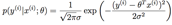
这里的记号 “p(y(i)|x(i);θ)” 表示的是这是一个对于给定 x(i) 的
y(i) 的分布，用 θ
进行了参数化。 注意这里咱们不能用 θ (“p(y(i)|x(i),θ)”)来当做条件，因为 θ 并不是一个随机变量。这个 y(i) 的分布还可以写成 y(i) | x(i); θ _ N (θT x(i), σ2)。
给定一个 X 为设计矩阵（design matrix），包含了全部x(i)，然后再给定 θ，那么
y(i) 的分布是什么？数据的概率以p (_y|X; θ) 的形式给出。在θ取某个固定值的情况下，这个等式通常可以看做是一个_y 的函数（也可以看成是 X 的函数）。当我们要把它当做 θ
的函数的时候，就称它为 似然函数（likelihood function）：
L(θ) = L (θ; X, _y) = p (_y|X; θ)_
结合之前对 ε(i) 的独立性假设 (这里对y(i) 以及给定的 x(i)也都做同样假设)，就可以把上面这个等式改写成下面的形式：

现在，给定了 y(i) 和 x(i) 之间关系的概率模型了，用什么方法来选择咱们对参数 θ
的最佳猜测呢？最大似然法（maximum likelihood）告诉我们要选择能让数据的概率尽可能大的 θ。也就是说，咱们要找的 θ
能够让函数 L(θ) 取到最大值。
除了找到 L(θ) 最大值，我们还以对任何严格递增的 L(θ) 的函数求最大值。如果我们不直接使用 L(θ)，而是使用对数函数，来找对数函数 l(θ) 的最大值，那这样对于求导来说就简单了一些：
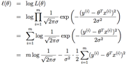
因此，对 l(θ) 的最大值也就意味着下面这个子式取到最小值：

到这里我们能发现这个子式实际上就是
J(θ)，也就是最原始的最小均方成本函数（least-squares
cost function）。总结一下也就是：在对数据进行概率假设的基础上，最小均方回归得到的
θ 和最大似然法估计的 θ 是一致的。所以这是一系列的假设，其前提是认为最小均方回归（least-squares regression）能够被判定为一种非常自然的方法，这种方法正好就进行了最大似然估计（maximum likelihood estimation）。（要注意，对于验证最小均方法是否为一个良好并且合理的过程来说，这些概率假设并不是必须的，此外可能（也确实）有其他的自然假设能够用来评判最小均方法。）
另外还要注意，在刚才的讨论中，我们最终对 θ 的选择并不依赖 σ2，而且也确实在不知道 σ2 的情况下就已经找到了结果。稍后我们还要对这个情况加以利用，到时候我们会讨论指数簇以及广义线性模型。
4 局部加权线性回归（Locally weighted linear regression）
假如问题还是根据从实数域内取值的
x ∈ R 来预测
y 。左下角的图显示了使用
y = θ0 + θ1x 来对一个数据集进行拟合。我们明显能看出来这个数据的趋势并不是一条严格的直线，所以用直线进行的拟合就不是好的方法。

那么这次不用直线，而增加一个二次项，用 y
= θ0 +
θ1x + θ2x2 来拟合。(看中间的图) 很明显，我们对特征补充得越多，效果就越好。不过，增加太多特征也会造成危险的：最右边的图就是使用了五次多项式 y = 5j=0 θjxj 来进行拟合。看图就能发现，虽然这个拟合曲线完美地通过了所有当前数据集中的数据，但我们明显不能认为这个曲线是一个合适的预测工具，比如针对不同的居住面积 x 来预测房屋价格 y。先不说这些特殊名词的正规定义，咱们就简单说，最左边的图像就是一个欠拟合（under fitting）的例子，比如明显能看出拟合的模型漏掉了数据集中的结构信息；而最右边的图像就是一个过拟合（over fitting）的例子。（在本课程的后续部分中，当我们讨论到关于学习理论的时候，会给出这些概念的标准定义，也会给出拟合程度对于一个猜测的好坏检验的意义。）
正如前文谈到的，也正如上面这个例子展示的，一个学习算法要保证能良好运行，特征的选择是非常重要的。（等到我们讲模型选择的时候，还会看到一些算法能够自动来选择一个良好的特征集。）在本节，咱们就简要地讲一下局部加权线性回归（locally weighted linear regression ，缩写为LWR），这个方法是假设有足够多的训练数据，对不太重要的特征进行一些筛选。这部分内容会比较简略，因为在作业中要求学生自己去探索一下LWR 算法的各种性质了。
在原始版本的线性回归算法中，要对一个查询点
x 进行预测，比如要衡量 h(x)，要经过下面的步骤：
1. 使用参数 θ 进行拟合，让数据集中的值与拟合算出的值的差值平方(y(i) _ θT x(i))2最小（最小二乘法的思想）；
2. 输出 θT x 。
相应地，在 LWR 局部加权线性回归方法中，步骤如下：
1. 使用参数 θ 进行拟合，让加权距离 w(i)(y(i) _ θT x(i))2 最小；
2. 输出 θT x。
上面式子中的 w(i) 是非负的权值。直观点说就是，如果对应某个 i 的权值 w(i) 特别大，那么在选择拟合参数 θ 的时候，就要尽量让这一点的 (y(i) _ θT x(i))2 最小。而如果权值w(i) 特别小，那么这一点对应的(y(i) _ θT x(i))2 就基本在拟合过程中忽略掉了。
对于权值的选取可以使用下面这个比较标准的公式：
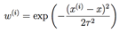
如果
x 是有值的向量，那就要对上面的式子进行泛化，得到的是 w(i) = exp(_(x(i) _x)T (x(i) _x)/(2τ2))，或者 w(i) = exp (_(x(i) _ x)T Σ_1(x(i) _ x)/2)，这就看是选择用τ 还是 Σ。
要注意的是，权值是依赖每个特定的点
x 的，而这些点正是我们要去进行预测评估的点。此外，如果 |x(i) _ x| 非常小，那么权值 w(i) 就接近 1；反之如果 |x(i) _ x| 非常大，那么权值 w(i) 就变小。所以可以看出， θ 的选择过程中，查询点 x 附近的训练样本有更高得多的权值。（θ is chosen giving a much higher “weight” to
the (errors on) training examples close to the query point x.）（还要注意，当权值的方程的形式跟高斯分布的密度函数比较接近的时候，权值和高斯分布并没有什么直接联系，尤其是当权值不是随机值，且呈现正态分布或者其他形式分布的时候。）
随着点 x(i) 到查询点 x 的距离降低，训练样本的权值的也在降低，参数 τ 控制了这个降低的速度；τ 也叫做带宽参数，这个也是在你的作业中需要来体验和尝试的一个参数。
局部加权线性回归是咱们接触的第一个非参数算法。而更早之前咱们看到的无权重的线性回归算法就是一种参数学习算法，因为有固定的有限个数的参数（也就是 θi ），这些参数用来拟合数据。我们对 θi 进行了拟合之后，就把它们存了起来，也就不需要再保留训练数据样本来进行更进一步的预测了。与之相反，如果用局部加权线性回归算法，我们就必须一直保留着整个训练集。这里的非参数算法中的 非参数“non-parametric”
是粗略地指：为了呈现出假设 h 随着数据集规模的增长而线性增长，我们需要以一定顺序保存一些数据的规模。（The term “non-parametric” (roughly) refers to
the fact that the amount of stuff we need to keep in order to represent the
hypothesis h grows linearly with the size of the training set. ）


Part II_分类和逻辑回归（Classification and
logistic regression）
接下来咱们讲一下分类的问题。分类问题其实和回归问题很像，吃不过我们现在要来预测的 y 的值只局限于少数的若干个离散值。眼下咱们首先关注的是二值化分类问题，也就是说咱们要判断的 y 只有两个取值，0 或者 1。（咱们这里谈到的大部分内容也都可以扩展到多种类的情况。）例如，假如要建立一个垃圾邮件筛选器，那么就可以用 x(i) 表示一个邮件中的若干特征，然后如果这个邮件是垃圾邮件，y 就设为1，否则 y 为 0。0 也可以被称为消极类别（negative class），而 1 就成为积极类别（positive
class），有的情况下也分别表示成“-” 和 “+”。对于给定的一个 x(i)，对应的y(i) is也称为训练样本的标签（label）。
5 逻辑回归（Logistic regression）
我们当然也可以还按照之前的线性回归的算法来根据给定的
x 来预测 y，只要忽略掉 y 是一个散列值就可以了。然而，这样构建的例子很容易遇到性能问题，这个方法运行效率会非常低，效果很差。而且从直观上来看，hθ(x) 的值如果大于1 或者小于0 就都没有意义了，因为咱们已经实现都确定了 y ∈ {0, 1}，就是说 y 必然应当是 0 和 1这两个值当中的一个。
所以咱们就改变一下假设函数hθ(x)的形式，来解决这个问题。比如咱们可以选择下面这个函数：

其中有：
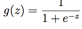
这个函数叫做逻辑函数 （logistic function） ，或者也叫双弯曲S型函数（sigmoid
function）。下图是 g(z) 的函数图像：
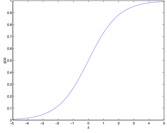
注意到没有，当z → ∞的时候
g(z) 趋向于1，而当z → _∞ 时g(z) 趋向于0。此外，这里的这个 g(z) ，也就是 h(x)，是一直在 0 和 1 之间波动的。然后咱们依然像最开始那样来设置 x0 = 1，这样就有了：
现在咱们就把 g 作为选定的函数了。当然其他的从0到1之间光滑递增的函数也可以使用，不过后面我们会了解到选择 g 的一些原因（到时候我们讲广义线性模型 GLMs，那时候还会讲生成学习算法，generative learning algorithms），对这个逻辑函数的选择是很自然的。再继续深入之前，下面是要讲解的关于这个 S 型函数的导数，也就是 g′ 的一些性质：

So, given the
logistic regression model, how do we fit θ for it? Following how we saw least
squares regression could be derived as the maximum likelihood estimator under a
set of assumptions, let’s endow our classification model with a set of
probabilistic assumptions, and then fit the parameters via maximum likelihood.